NMR data sets that have been recorded by Bruker or Varian Spectrometers
must be converted to the program's own file format, before they can be processed.
This conversion is handled by scripts what ensures maximum flexibility.
These scripts can be found in the default script directory (if the environment
variable PSNDSCRIPTDIR has been set). To prepare a file with scripts, a simple
setup utility ha been created that can handle the most common cases. Select
under the 'File' menu the option '
Prepare Bruker/Varian file'.
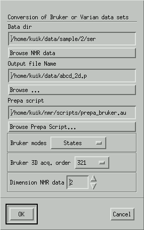
Data dir
The directory where the ser or fid file resides. It also should contain
parameters (acqus, acqu2s or procpar). It is ok to append 'ser'
or 'fid' to this parameter.
Output file Name
The output file name. If a full directory is specified, the program makes
this the current working directory.
Prepa script
prepa_bruker.au or prepa_varian.au
Bruker modes
States, TPPI, Echo-antiecho, States-TPPI
Bruker 2D acq. order
For 3D files: acquisition order is 321 or 312
Dimension NMR data
There are currently only prepa scripts for 1/2/3D data.
When OK is pressed, the script editor is displayed with the above values
added to the 'Script arguments'. When OK is pressed here, a file conversion
takes place and the first record of the new file is loaded and displayed.
Alternatively, press 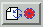
This will display the Script Editor. Load the correct prepa script and
add the arguments by hand.
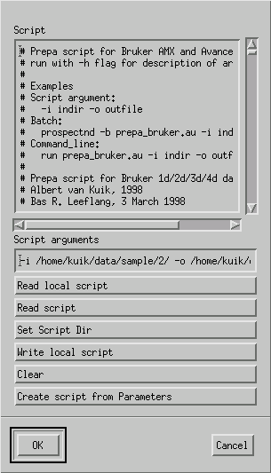
Use Read Script to select an appropriate processing script. Edit the
names of the input and output files and press OK.
The prepa Bruker script is called prepa_bruker.au, and can be
initiated with some arguments. To view those arguments, use
prospectnd -b prepa_bruker.au -h
This means, run the prospectnd program in the background mode (-b flag)
with the script name prepa_bruker.au (this is a script available from the
standard script directory) and with the argument help (-h). The output
will be something like:
-i file_or_directory_name - Define input file or directory
-o output_file
- Define output file
-d ndim
- Define the dimensionality of the file
-m n mode
- Define datatype in direction n (n=1,2,3,4)
-m n 0
- Set mode for tn from file (default) (n=1,2)
-m n c or -m n s or -m n 1 - Set mode for tn to States (i.e.
complex) (n=1,2)
-m n r or -m n t or -m n 2 - Set mode for tn to TPPI (i.e.
real) (n=1,2)
-m n e or -m n 3
- Set mode for tn to echo-antiecho
(n=1,2)
-m n z or -m n 4
- Set mode for tn to States-TPPI
(n=1,2)
-s n size
- Define size in direction n (n=1,2,3,4)
-h
- This help overview
The actual output will depend on the current version of the script. Now
one can prepare a file in batch mode with the following command:
prospectnd -b prepa_bruker.au -i data/2/ -o 2dfile.p -m 1 e -m 2
c
This means, convert the file that can be found in the directory data/2
(ser + acqus files) into the output file 2dfile.p. The optional arguments
with the -m flags specify that the spectrum was echo-antiecho in direction
1 and complex in direction 2. Of course, the same can be done by loading
the script in the script editor, an put the arguments in the Script arguments
text area.
Conversions used by the prepa script. Examples
are for the first 4 data points.
States - odd data points are written to the real data array and even
data points to the imaginary data array.
source 1 2 3 4 = real 1 3 + imaginary 2 4
TPPI - data are copied to the real data array.
source 1 2 3 4 = real 1 2 3 4
Echo-antiecho - 4 data points are mixed and written to the real and imaginary
data arrays.
source 1 2 3 4 = real 1+3 4-2 + imaginary 2+4 1-3
States-TPPI - Same as States, but every second real and imaginary data
point is multiplied by -1.
source 1 2 3 4 = real 1 -3 + imaginary 2 -4
All records in direction 2 now have been processed and the first record
(in direction 2) of the new file has been loaded. One way to proceed is to
select a number of records in direction 1 to define new parameters. Get the
Row/Column select mode with  .
.
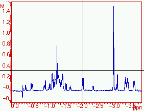
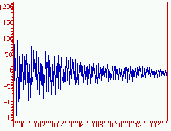
One can use the bookmark option
. Press 'Add Bookmark' to add the current record to the list.
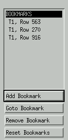
Now apply a window function, a Fourier transformation and a phase correction,
in the same way as for direction 2.
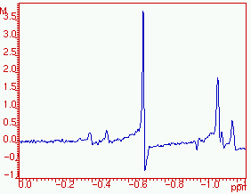
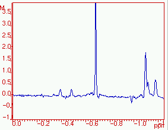
Now go back to direction 2, by pressing the
(= Undo record selection) button.
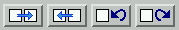
Select some other records from direction 1, so that we do not only have
peaks at the right side of the spectrum. IMPORTANT:
use AU to repeat all processing steps for the newly selected record.
Next do some additional phase correction. Test all these processing steps
on yet another record.
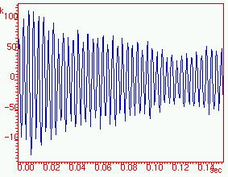
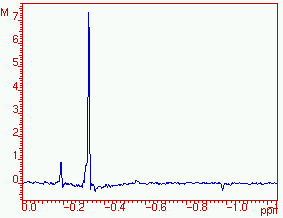
There is also another way of doing a 2D phase correction
Finally one can end with a baseline correction.
Again use "Create script from Parameters" to create a script and process
the file.